TOP 10 Filmes 2020/2021:
1. Por lugares Incríveis
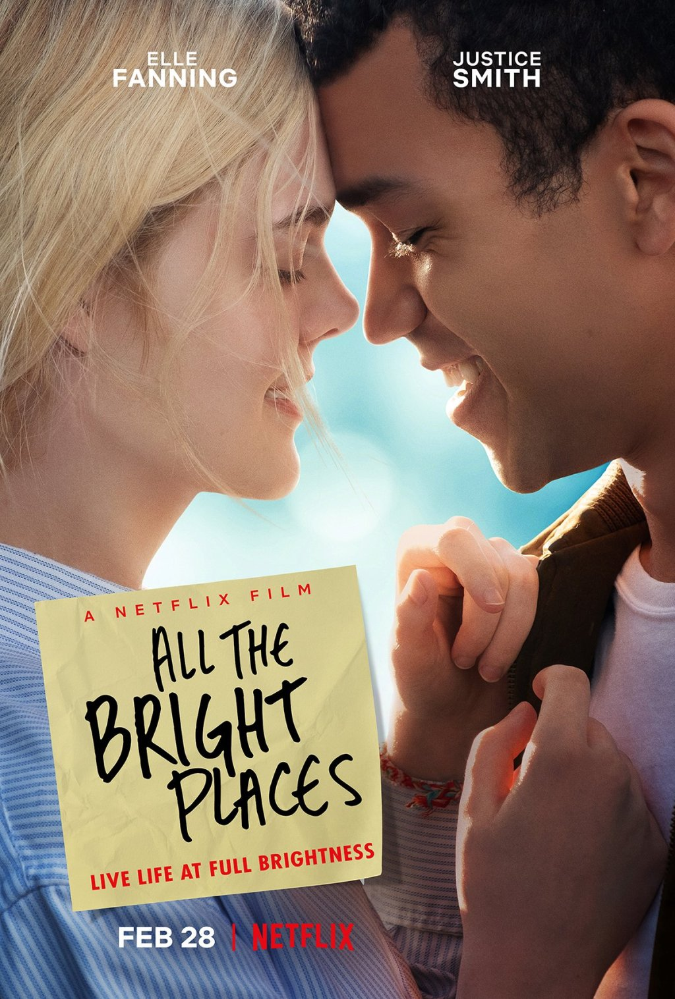
Violet Markey (Elle Fanning) perdeu a irmã e está devastada, mas,
então, surge Theodore Finch (Justice Smith), um jovem imprevisível
e cheio de energia, que irá ajudar Violet a voltar a se sentir feliz.
Um original Netflix que enche o coração de esperança num grande amor.
2. Soul
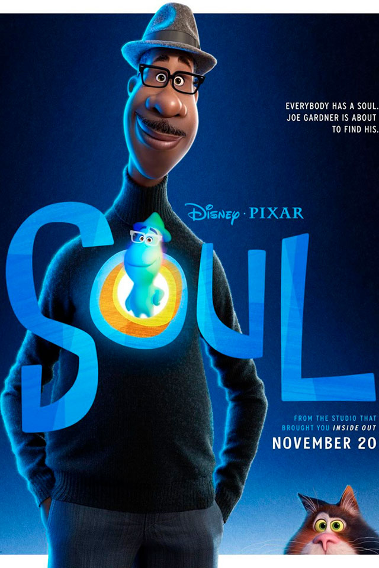
Esta nova animação da Pixar é sobre um professor de música que sonha em
levar a vida tocando jazz. O problema é que, justo no momento em que as
coisas começam a dar certo, ele sofre um terrível acidente que o faz
voltar ao "mundo das almas".
3. Príncipe em Nova York 2
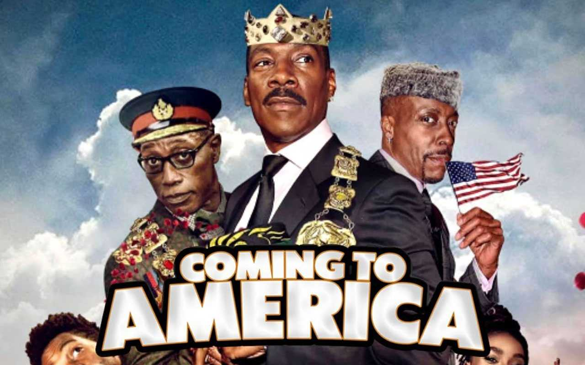
O clássico da comédia está de volta! Akeem agora é o rei de Zamunda.
Mas, ao lado de seu fiel escudeiro e amigo Semmi ele vai precisar
voltar aos Estados Unidos, mais precisamente ao Queens, bairro de
Nova Iorque onde parte de suas aventuras começou, pois há a suspeita
de que seu filho more por lá.
4. O Mapa das Pequenas Coisas Perfeitas
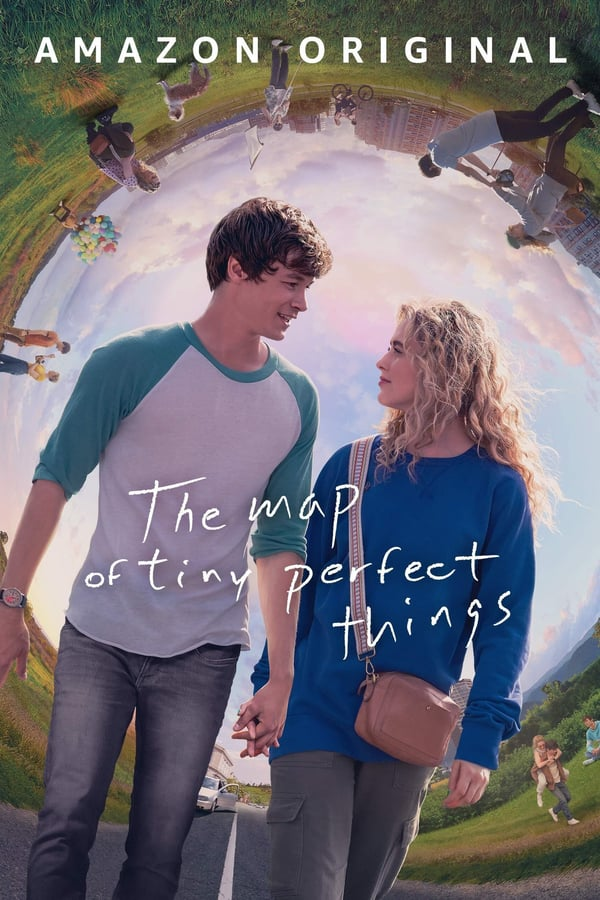
Dois adolescentes ficam presos no tempo, revivendo continuamente o
mesmo dia. Enquanto ele quer se livrar desse ciclo, ela quer ficar
e aproveitar as oportunidades. Contudo, apenas juntos eles poderão
entender os pequenos e preciosos momentos da vida, encontrando um
significado nessa vivência e assim se libertarem.
5. Moxie - Quando as Garotas Vão à Luta
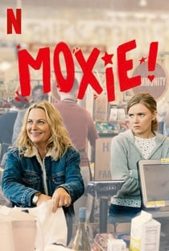
O que acontece quando se junta uma garota de uma cidade pequena do
Texas com o movimento feminista? Uma revolução! Inspirada pelo
passado da mãe como Riot Grrrl, antiga integrante do feminismo
punk dos anos 90, Vivian decide começar uma mobilização na própria
escola. O filme é baseado na obra homônima de Jennifer Mathieu.
6. Eu me importo

Com uma autoconfiança impressionante, Marla Grayson é uma curadora
nomeada pela Justiça para cuidar de idosos, de quem apropria os bens
por meios duvidosos porém dentro da lei. É um esquema muito bem armado
que Marla, junto com a sócia e namorada Fran, está prestes a usar no
próximo alvo: Jennifer Peterson, uma aposentada rica e sem herdeiros.
Mas, quando descobre que a vítima também tem um segredinho sujo e está
ligada a um perigoso gângster
7. Jojo Rabbit
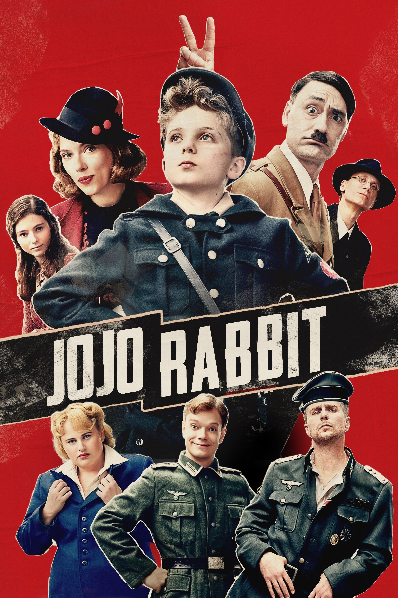
Esta sátira ambientada num dos períodos mais tristes da história aposta
no humor para criticar a intolerância, tal como fez Charlie Chaplin no
início do século XX. O filme conta a história de um menino alemão da
Juventude Hitlerista que descobre uma garota judia escondida em sua casa.
8. O Poço
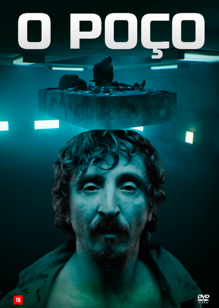
Um filme de terror e suspense que se tornou viral logo nos primeiros dias
em que foi lançado. Há quem diga que esse filme lembra um pouco a proposta
do Parasita, vencedor do Oscar de Melhor Filme 2020. Nessa história,
prisioneiros estão numa prisão vertical, em que a comida chega conforme
as plataformas. Assim, quem está mais para o fim da prisão, fica só com
os restos de comida das plataformas de cima.
9. Enola Holmes
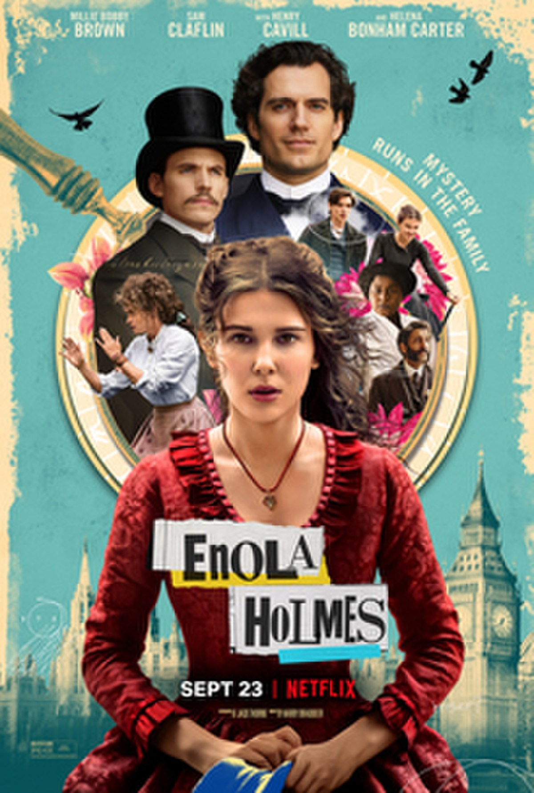
Com certeza você já ouviu falar em Sherlock Holmes, mas provavelmente
ainda não tinha tido contato com a sua irmã, Enola Holmes.A nova
história transmitida pela Netflix tem como trama principal o
desaparecimento da mãe dos Holmes, Eudoria. Dos três filhos de Eudoria
- Sherlock, Mycroft e Enola -, é a caçula que faz de tudo para decifrar
esse misterioso sumiço.É a mais jovem Holmes que rouba a cena, deixando
Sherlock praticamente de lado. Vivida por Millie Bobby Brown, Enola é
uma moça de 16 anos brilhante, com o mesmo instinto farejador e solucionador
de mistérios que o irmão mais velho.
10. Bliss: Em Busca da Felicidade
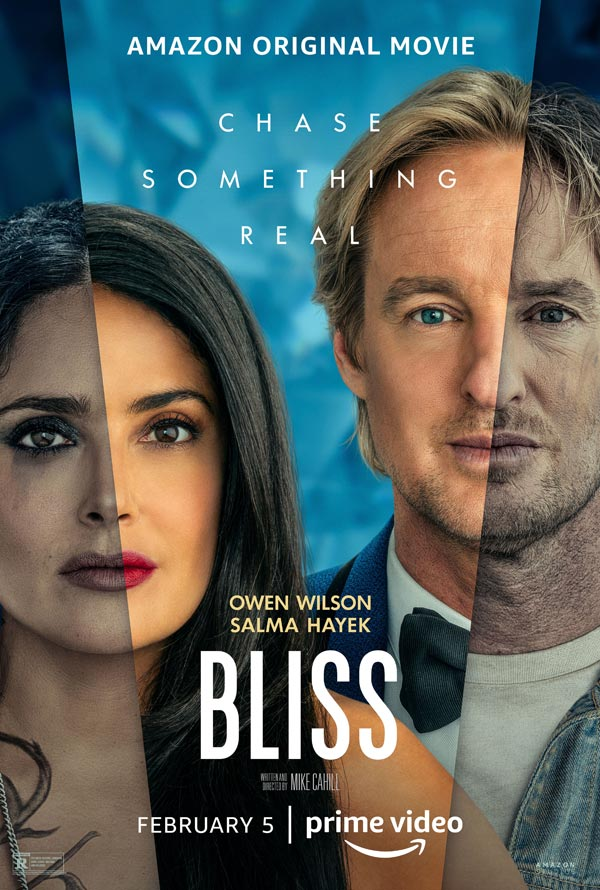
Em Bliss: Em Busca da Felicidade, Greg é um homem divorciado que vê sua vida
toda mudar quando conhece Isabel. Ela afirma que o mundo onde vivem não passa
de uma simulação tecnológica e que ninguém, além deles, é real. Aos poucos,
Greg passa a acreditar em Isabel.
Agora vamos falar de séries?! Tenho um TOP 10 maravilhoso para te indicar.
TOP 10 séries:
1. Modern Family
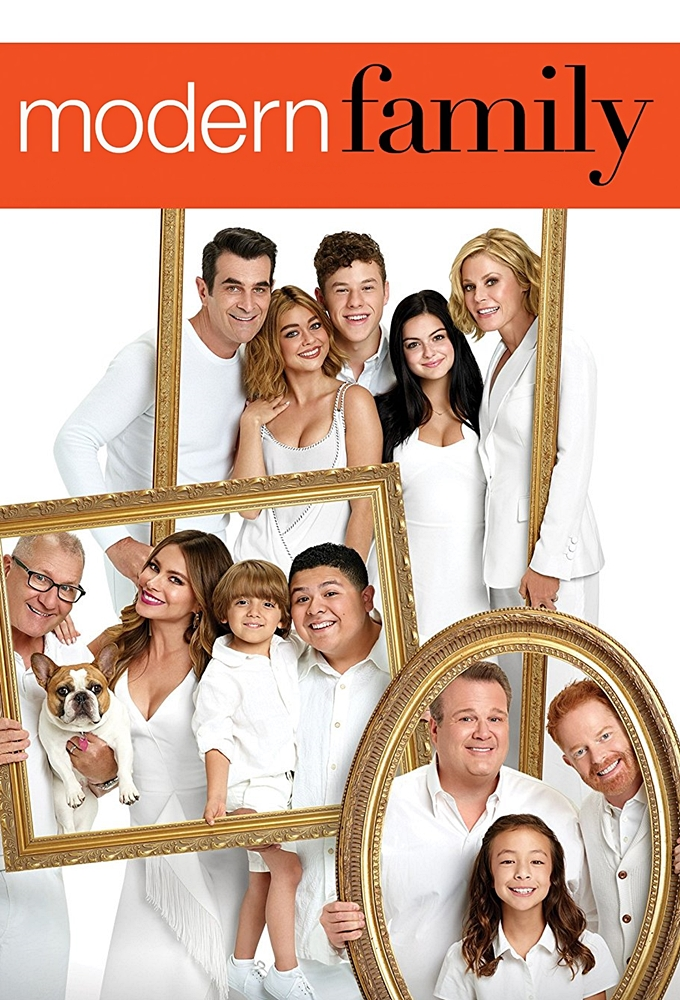
O dia a dia de três famílias ligadas entre si. Jay Pritchett é um homem mais
velho que se casa com a latina Glória, muitos anos mais nova que ele. Os dois
vivem com o filho dela, Manny, e convivem diariamente com os filhos do primeiro
casamento de Jay: Caire e Mitchell. Ela é uma dona de casa casada com o corretor
de imóveis Phil Dunphy e que luta para dar a melhor educação para os filhos
Haley, Alex e Luke. Já Mitchell vive um relacionamento com Cameron Tucker,
que tem como fruto a filha adotiva Lily.
2. This is us
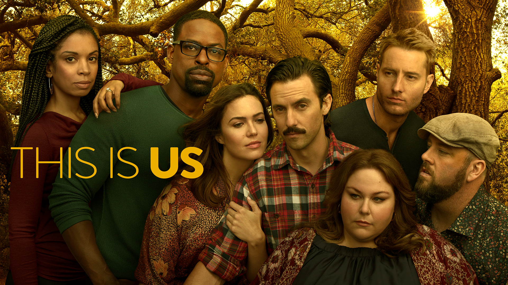
This Is Us apresenta a história de três pessoas nascidas no mesmo dia, dois homens
e uma mulher. A trama navega entre os anos 1980 e os dias atuais, mostrando a
infância de cada uma delas em contraste com a vida adulta, marcada por uma
trejedia familiar.
3. Peaky Blindes
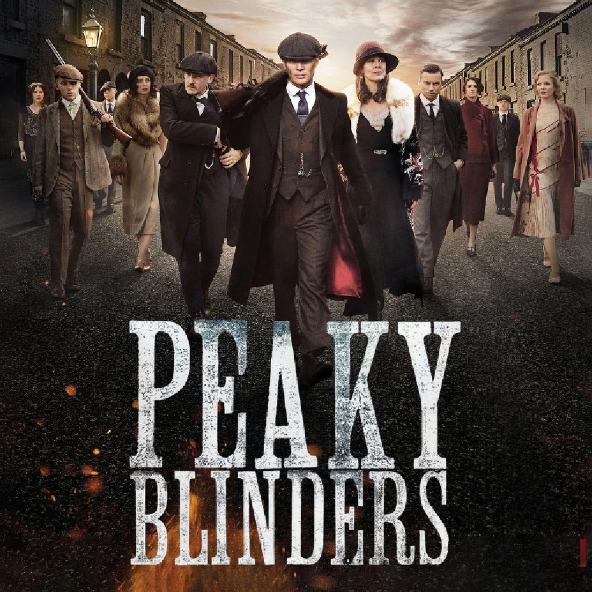
Em Peaky Blinders, Thomas Shelby (Cillian Murphy) e seus irmãos retornam a
Birmingham depois de servir no exército britânico durante a Primeira Guerra
Mundial. Shelby e os Peaky Blinders, a gangue de criminosos da qual ele é líder,
controlam a cidade com mãos de ferro, construindo um império que vai desde
corridas de cavalo adulteradas e roubo de carregamentos até parcerias secretas
com os russos. Mas as ambições de Shelby se estendem para além de Birmingham,
e ele não vai deixar que ninguém atrapalhe seus planos de se tornar um dos
homens mais poderosos do Reino Unido.
4. Bridgerton
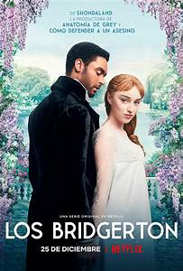
Lançada em dezembro de 2020, a série Bridgerton é a mais vista da história da
plataforma Netflix, ultrapassado gigantes como The Witcher e La Casa de Papel.
Baseada nos livros da escritora norte-americana Julia Quinn, a primeira temporada
da série gira em torno do relacionamento entre Daphne Bridgerton e o Duque de
Hastings, na Inglaterra do século XIX. A série chama atenção pelas cenas divertidas
e pela beleza dos cenários e do figurino.
5. Lupin
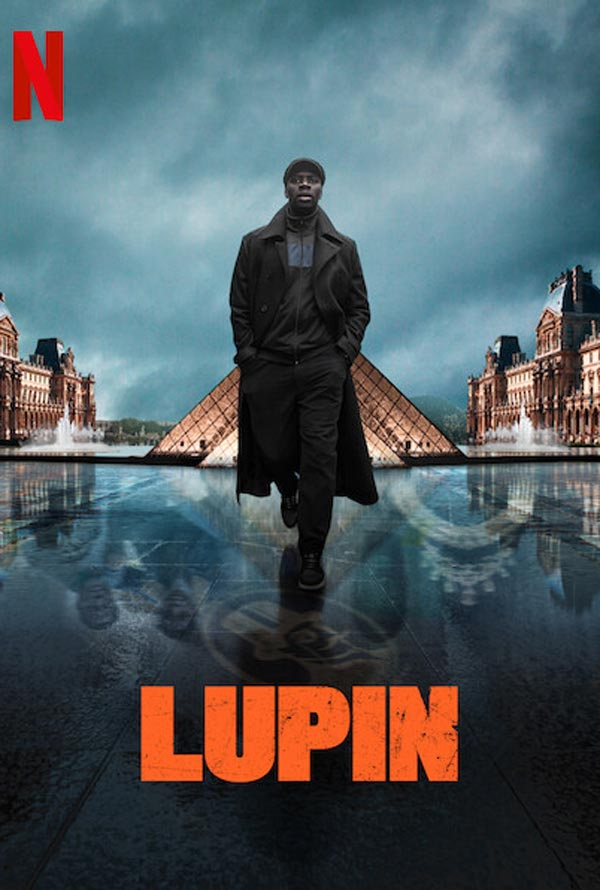
Lançada em 2021, Lupin rapidamente se tornou uma das séries queridinhas da galera.
A história, cheia de mistério e ação, se passa em Paris e tem por cenário principal
o famoso Museu do Louvre. O protagonista é Assane Diop, zelador do museu. Ele planeja
um grande assalto ao Louvre, ao estilo do clássico personagem da literatura, na
tentativa de vingar a morte do pai.
6. O Gambito da Rainha
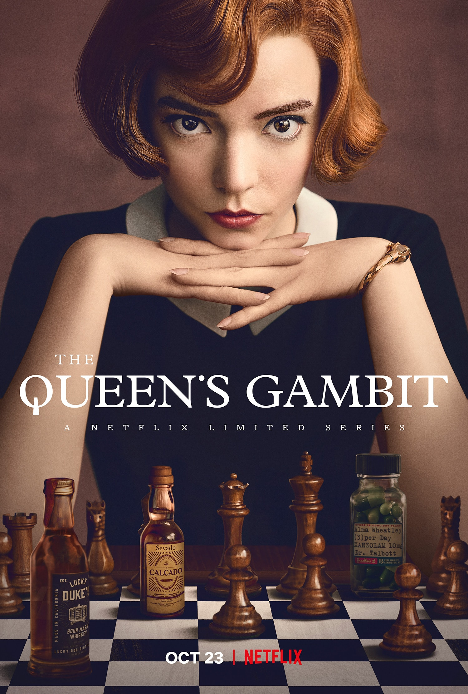
É curioso que uma série sobre um jogo como o xadrez, que está longe de ser um dos mais
populares, tenha dado tão certo. Mas a verdade é que O Gambito da Rainha (nome de um
lance de xadrez) é muito mais do que uma série sobre xadrez. A minissérie de sete
episódios gira em torno da trajetória de Beth Harmon, de sua infância no orfanato aos
principais torneios de xadrez do mundo.
7. Fate: The Winx Saga
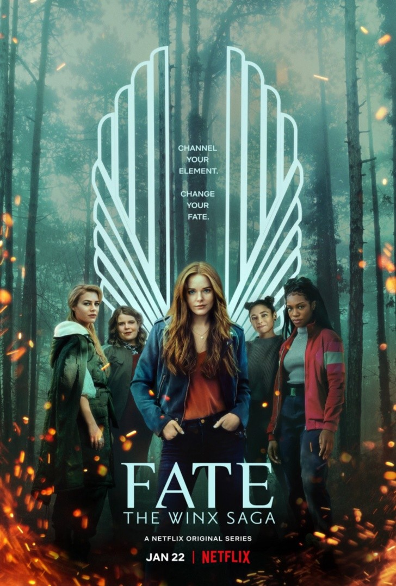
Fate: The Winx Saga é uma série de fantasia adolescente lançada no final de janeiro de 2021.
A protagonista é Bloom, uma jovem fada que cresceu entre os seres humanos. A história começa
com ela chegando à escola de fadas Alfea, localizada numa espécie de mundo paralelo das fadas.
Lá Bloom entrará em contato com seus fantásticos e perigosos poderes.
8. Vikings
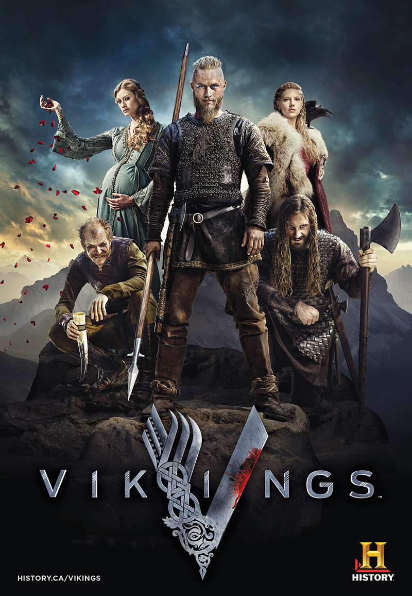
A série Vikings narra a história dessa civilização conhecida por suas habilidades
guerreiras e navais e que viveu seu auge no período da Alta Idade Média. Baseada
em lendas da Escandinávia, a série acompanha Ragnar Lothbrok, um guerreiro que
se julgava descendente de Odin deus principal dos vikings. A 6ª e última temporada
chegou em 2020.
9. Orange Is the New Black
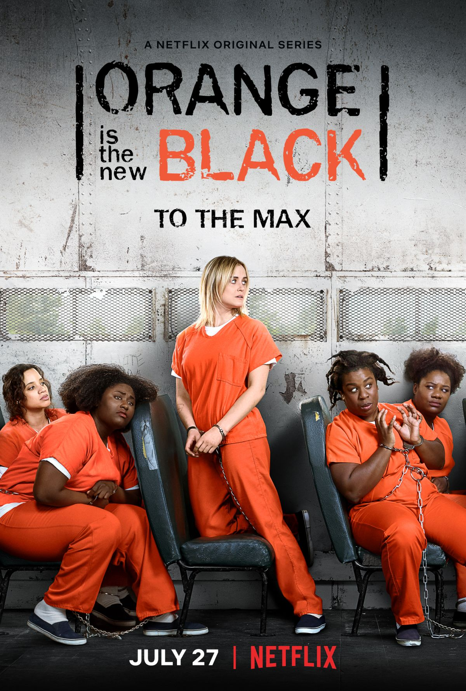
Piper Chapman é uma mulher de classe média-alta que vive tranquilamente em Nova York
com seu marido. Mas um delito cometido há dez anos vem à tona, fazendo com que ela
seja condenada a 1 ano e 3 meses de prisão. Agora ela vai ter de lidar com os
inúmeros problemas relacionados à vida no cárcere. A história é baseada nas memórias
de Piper Kerman.
10. The Crown
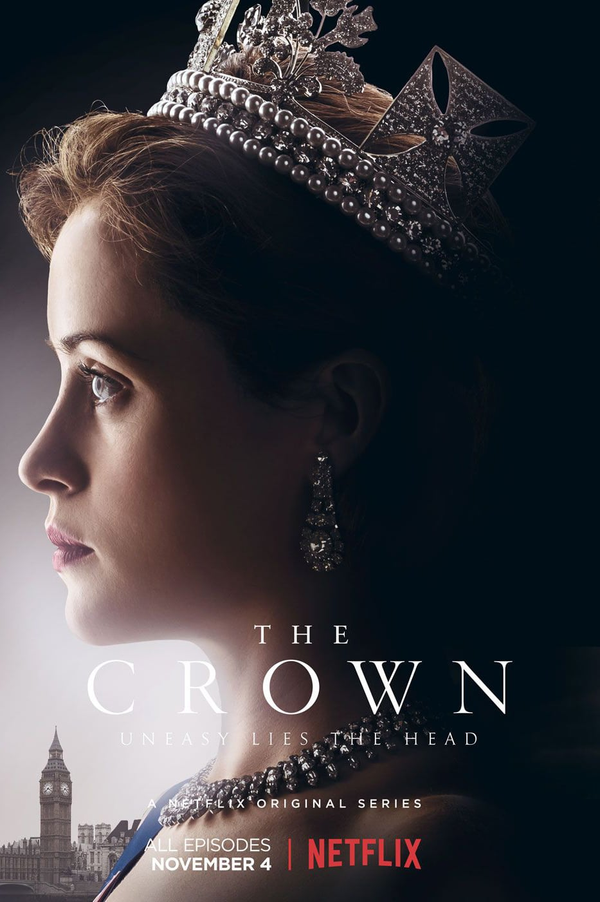
The Crown é uma série impecável, seja pelo roteiro, pelas atuações ou pela fotografia.
A série é um drama biográfico que acompanha a vida de Elizabeth II, desde a sua coroação
após a morte do pai, no início dos anos 50. A série é muito bem avaliada tanto pelo
público quanto pela crítica, alcançando avaliação de 90% no site Rotten Tomatoes.